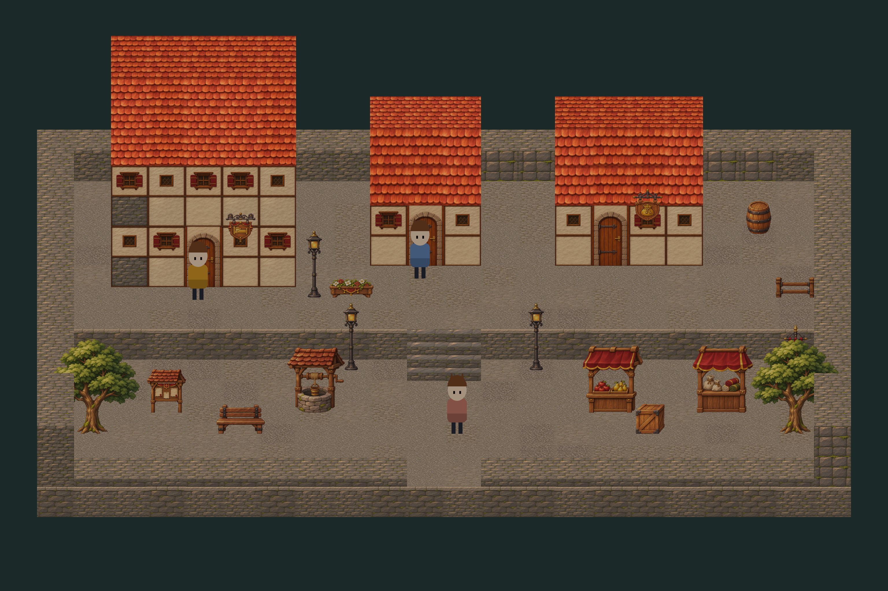
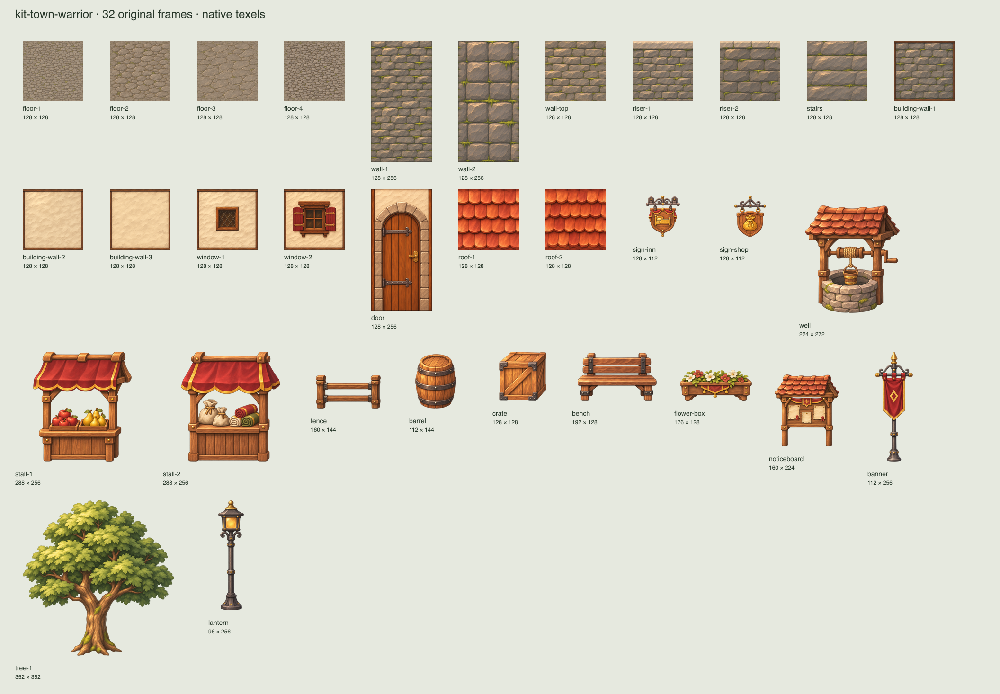
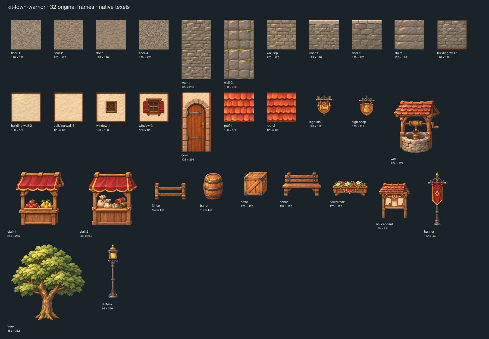
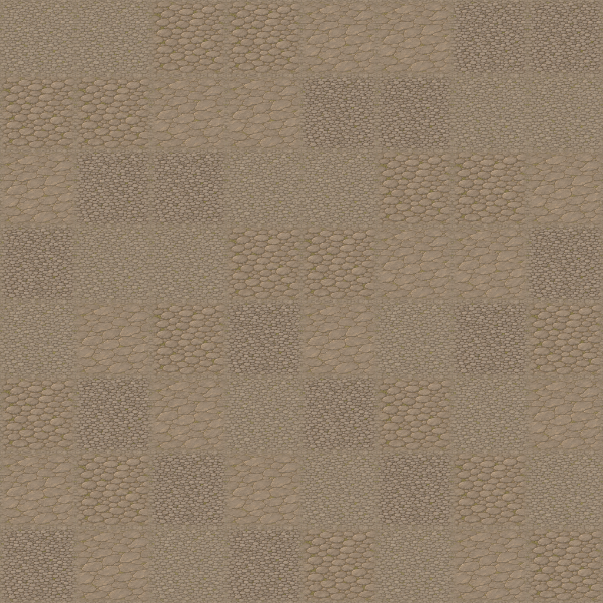

32 original painted assets. Tiles are 128 texels; trees are about 320 texels tall. The assembled scene uses uma-quest’s world builder and its fixed 35° camera. The figure is an original stand-in for scale.



